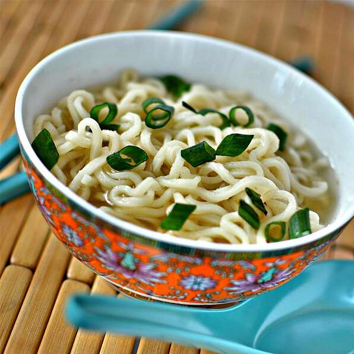

Ramen

Description
Noodle dish famous in Japan, originally from China.
Ingredients
1 Packet of Ramen
2 Cups of Water
Steps
Empty packet of ramen ingredients in a bowl
Add water
Wait 3 minutes for the noodles to soften
Enjoy.